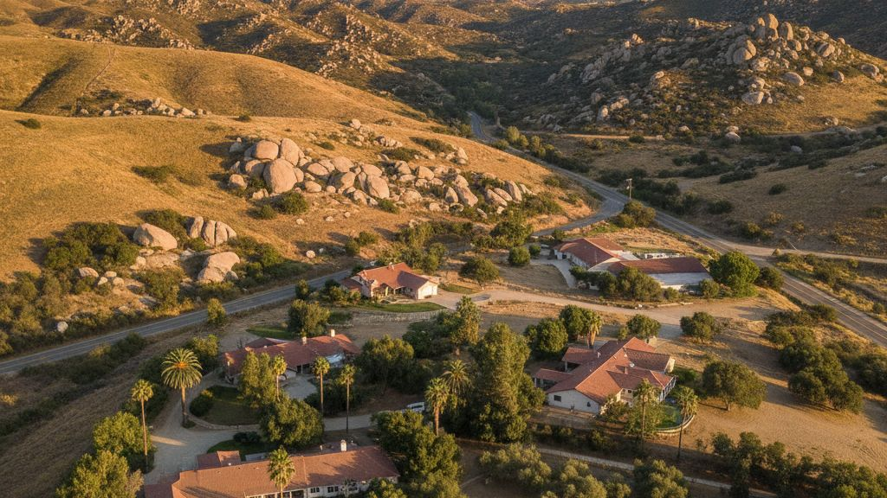
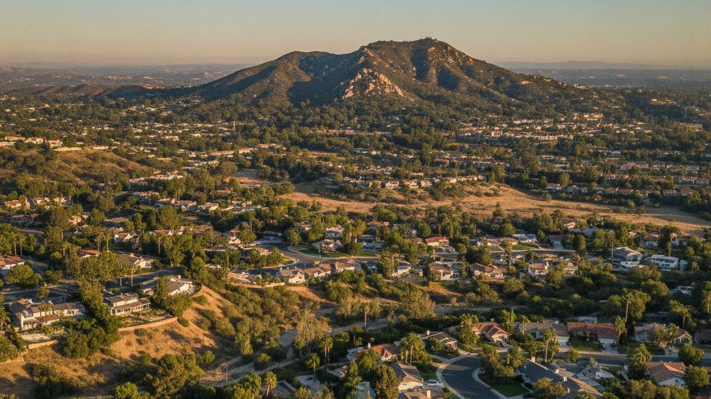

La Mesa91941, 91942La Mesa is an incorporated East County city with a walkable village core and hillside neighborhoods that rise toward Mount Helix.Lemon Grove91945Lemon Grove is a compact city between La Mesa and San Diego that takes its name from its early citrus industry.Spring Valley91977, 91978Spring Valley is a large unincorporated community southeast of La Mesa, and it contains both older flatland tracts and rising hillside neighborhoods.Rancho San Diego91978, 92019, 91977Developed across the Sweetwater and Jamacha valleys, Rancho San Diego is a planned, unincorporated area with a golf course and neighborhood parks.Crest92021Crest is a hillside community above El Cajon, between Dehesa and Harbison Canyon, with rural lots and broad views.Harbison Canyon92021Harbison Canyon is a small unincorporated canyon community east of El Cajon, surrounded by oak-covered hills.Alpine91901Alpine is a foothill community along Interstate 8, with oak woodlands, ranch parcels and a small town center.

Mount Helix / Casa de Oro91941, 91977Mount Helix rises above La Mesa and Spring Valley, and the neighboring community of Casa de Oro occupies the flatter ground below.El Cajon92019, 92020, 92021El Cajon is East County's largest city and sits in a broad valley ringed by granite hills.Granite Hills92019, 92021Granite Hills is a residential area in the western part of El Cajon's hill country, named for the boulder-strewn slopes that frame it.Bostonia92021Bostonia is an older residential district on the north side of El Cajon, historically tied to the early citrus and ranching era.Santee92071Santee lies along the San Diego River and has grown from a small ranching community into a planned suburban city.Lakeside92040Rodeo grounds, horse trails and wide lots give Lakeside, an unincorporated town on the upper San Diego River, a semi-rural feel.Winter Gardens92040Winter Gardens is a residential section of Lakeside near the river's southern bank.Lemon Grove91945Lemon Grove is a compact city between La Mesa and San Diego that takes its name from its early citrus industry.Spring Valley91977, 91978Spring Valley is a large unincorporated community southeast of La Mesa, and it contains both older flatland tracts and rising hillside neighborhoods.Rancho San Diego91978, 92019, 91977Developed across the Sweetwater and Jamacha valleys, Rancho San Diego is a planned, unincorporated area with a golf course and neighborhood parks.Crest92021Crest is a hillside community above El Cajon, between Dehesa and Harbison Canyon, with rural lots and broad views.Harbison Canyon92021Harbison Canyon is a small unincorporated canyon community east of El Cajon, surrounded by oak-covered hills.Alpine91901Alpine is a foothill community along Interstate 8, with oak woodlands, ranch parcels and a small town center.Have a property that needs a value?
Send the address and the reason for the appraisal. You will get a firm quote and a schedule before anything is booked.